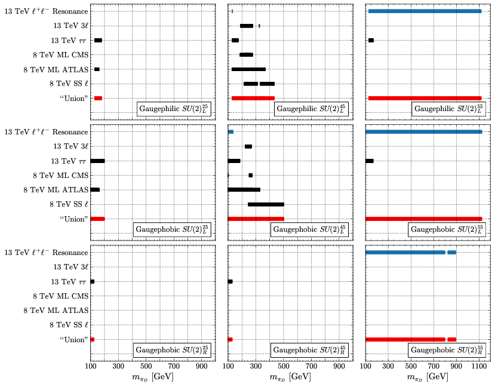
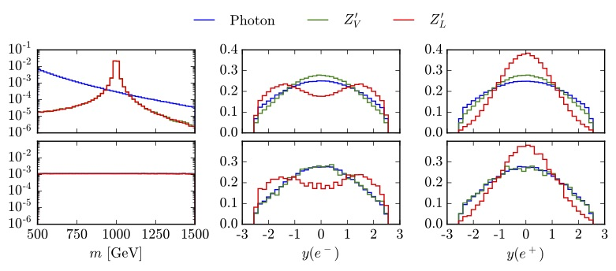
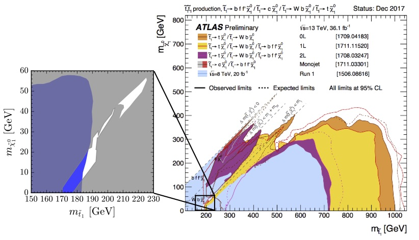
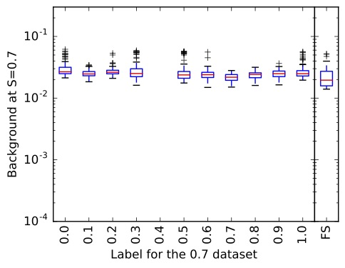
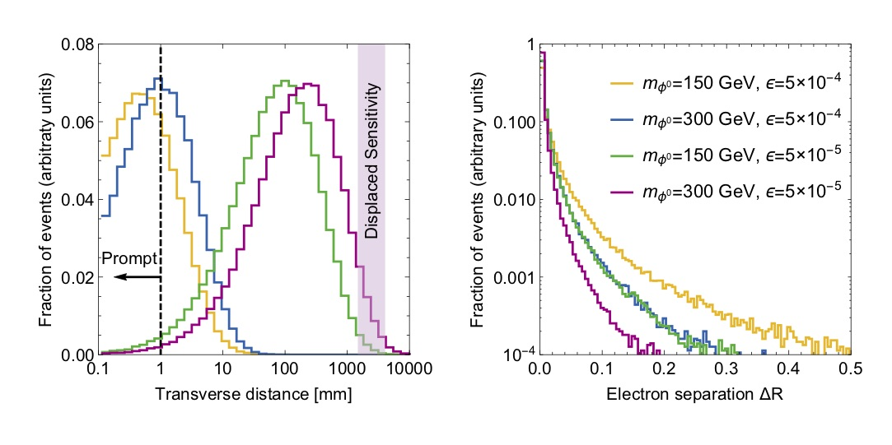
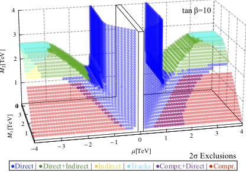

SOME HIGHLIGHTS OF MY WORK
The presence of a light "stop squark" (see lower pannel) can affect the measurement of the mass of the top quark. [1909.09670]

We use Gaia data to fild old stars which have accretted onto the Milky Way, which can help us learn about the distribution of dark matter in our galaxy. [1907.06652] [1907.07190] [1907.07681]

Dark Mesons could make up the dark matter in the Universe. Current LHC searches have surprisingly low sensitivity. [1809.10184]

Diving into machine learning to discover what is important for the machine to accurately classify. We "plane" away the information. [1709.10106]

Searching for supersymmetric particles is one of the main goals of the LHC. There are excellent bounds on "stop squarks" except for a small splinter. [1804.00111]
Machine learning for the LHC often uses simulated data to train the classifier. "Weak supervision" allows for training directly on real collider data. [1706.09451]
Collider signals of dark photons are an exciting probe for new gauge forces and are characterized by events with boosted lepton jets. [1612.00026]
R-parity conserving supersymmetry yields a dark matter candidate. Future experiments can cover most of for the "well-tempered neutralino." [1510.03460]
